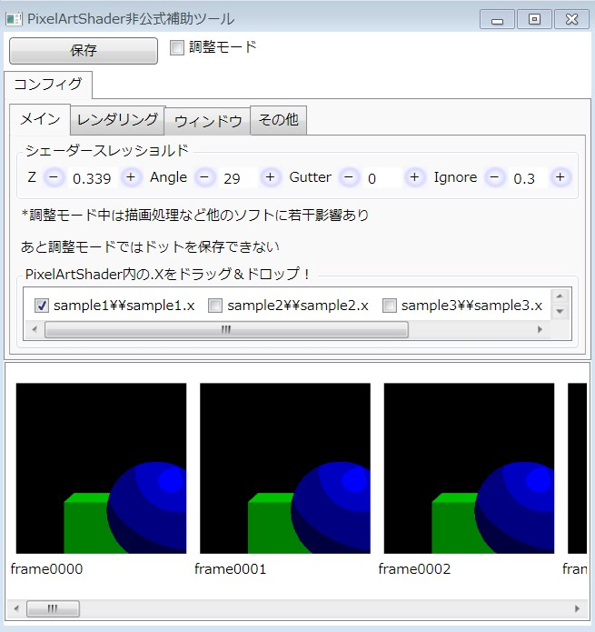

PixelArtShader補助ツールを作成してみた・・・ｗ
https://www.dropbox.com/s/te7r6fm5g7v0agc/PixelArtShader%E8%A3%9C%E5%8A%A9%E3%83%84%E3%83%BC%E3%83%AB.zip?dl=0

あとは使ってみてください・・・ｗ バグもありますが、もちろん、修正しませんよっと・・・ｗ
起動前に、config.tecoの resolution_inner_max を 2048,2048 に変更しておいてください。演算を読み込む機能は面倒なので割愛しましたｗ
それから、作るときに、マテリアルエディタとテクスチャエディタもつけようかと思ってたんですが、
ファイル一つひとつを編集するか、フォルダをまとめて一気に作れるなら、どっちが使うのも簡単かなって思って、
config.tecoファイルの編集とビルドとドット絵シェーダーの起動のみに機能を絞りました・・・ｗ てか、
どうしようかと思って、約８時間、疲れで寝ながら、ねこあつめしてましたｗ 今日は調子悪かった・・・ｗ
とりあえず、公式ならもっと便利なもの作ってくれるはず！
てことで、私はこれから、RPGツクールをUE4やUnityにスプライトをコンバートするツール作ります！ノシ